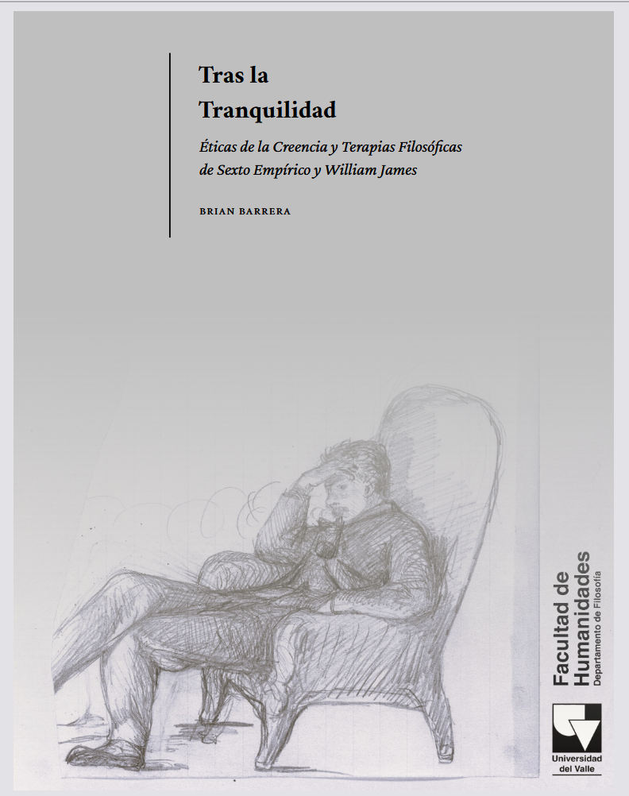

Tras la Tranquilidad
Éticas de la creencia y terapias filosóficas de Sexto Empírico y William James
La sabiduría humana consiste en reconocer la suprema exigencia del esfuerzo racional y, a la vez, su patética insuficiencia.

Filosofía, flexibilidad psicológica y salud mental
Los protagonistas de esta monografía, el escepticismo y el pragmatismo, han recibido tantas y tan variadas definiciones a lo largo de la historia de la filosofía (incluso por fera de ella), que en principio huelga tener claridad sobre el tratamiento que les daré aquí. Salvo que indique lo contrario, hablaré de escéptico
y escepticismo
para referirme al escepticismo pirrónico de la antigüedad, tal como se le retrata en las obras –neopirrónicas– de Sexto Empírico que han sobrevivido. Asimismo, con pragmatista
y pragmatismo
me referiré por lo general al pragmatismo clásico encabezado por William James. Mi propósito en esta monografía es llevar a cabo un estudio comparativo de ambas filosofías, con especial énfasis sobre lo que pueden enseñarnos acerca de las creencias humanas: qué son y cómo funcioonan; el modo en que nos afectan emocionalmente; y si podemos o incluso si debemos hacer algo con algunas de ellas.
El objetivo general de este trabajo es dilucidar las similitudes y diferencias entre las éticas de la creencia y las terapias filosóficas del escepticismo y el pragmatismo de esos autores. Para alcanzar esta meta, persido dos objetivos específicos, que a su vez definen la organización de la monografía: primero, identificar cómo funcionan los argumentos escépticos en favor de la suspensión del juicio como medio para la ataraxia; segundo, identificar los argumentos pragmatistas en defensa de nuestro derecho a creer como cora para le melancolía crónica. Con estos asuntos suficientemente esquematizados, lo que sigue será una cuidadosa comparación y valoración de ambas propuestas, la una en favor de la suspensión del juicio y la otra en defensa del derecho a creer.
En el primer capítulo defiendo la posibilidad de una ética de la creencia en las escrituras de Sexto Empírico, y explico en qué podría consistir dicha ética. Para ello, en primer lugar ezpongo las principales elementos de la filosofía pirrónica (tal como la presenta Sexto), resaltando su auto-declarada utilidad como una forma de orientarnos en la vida, con la que podamos purgarnos de dogmatismos y llevar una vida tranquila. A continuación, presento y evalúo los principales argumentos, aceptados explícita o implícitamente por la mayoría de comentariastas reseñados, según los cuales es imposible que un pirrónico pueda seguir reglas de creencia (sin comprometer su pirronismo). En contraste, propongo que las biôtikê têrêsis son plausiblemente aptas para servir al pirrónico como fuentes de normatividad doxástica. Por último, estudio la funcionalidad de los tropoi pirrónicos en el marco de esta lectura alternativa, centrada en sus aspectos prácticos. Al ginal, sostengo que la ética de la creencia de un pirrónico consiste en la flexibilización de los cánones de racionalidad, así como en la consecuente inhibición de nuestras naturales tendencias dogmáticas.
En el segundo capítulo analizo los argumentos de James contra el intelectualismo en filosofía, y defiendo la plausibilidad de la concepción pragmatista de la verdads. En primer lugar, reconstruyo los argumentos filosóficos que podemos encontrar en la psicología de James, sobretodo en su distinción entre perceptos y conceptos, y su modelo triádico de la mente. En estas teorías de hallan las bases para el permisivismo doxástico, el pluralismo epistémico y moral, y el contextualismo que James parecía defender. Después, presento el métido pragmático de las consecuencias y examino una a una las principales críticas que ha recibido. Conlcluyo que ninguna de dichas críticas es suficientemente sólida o procedente, y que la concepción pragmática de la verdad merece más atención de la que ha recibido. En la última sección analizo otra serie de argumentos en favor de la permisibilidad doxástica que también pueden extraerse de la obra de James. En especial, me concentro en la concepción pragmatista de la fe. Allí muestro por qué los escritos morales de James se interpretan mejor como lo que considero una ética exhortatoria hacia la auto-transformación.
En el último capítulo me ocupo propiamente de comprarar y contrastar las filosofías de Sexto y James, al menos tal y como han sido presentadas en los primeros dos capítulos de este trabajo. Para ello, en la primera mitad del capítulo me encargo de revisar críticamente los argumentos presentados has ahora en favor y encontra de la compativilidad e incompatibilidad entre las filosofías estudiadas. Allí señalo que una mejor forma de estudiar las relaciones entre Sexto y James —una forma que ha sido descuidada en la literatura revisada— es atendiendo a las conexiones realmente históricas que podemos encontrar entre la tradición pirrónica antigua y la pragmatista del siglo XX. En la segunda mitad del capítulo esbozo algunas semejanzas entre ambas filosofías y un enfoque psicoterpéutico contemporáneo. Con base en esto, argumento en favor de la plausibilidad de la tesis histórica según la cual es posible que Sexto y James (u otros practicantes del escepticismo y el pragmatismo como lo entendían estos dos personajes) se hayn beneficiado de sus filosofías, aunque critico las limitaciones de versiones fuertes de la tesis psicológica que propone que también nosotros hoy tendríamos suficente con estas filosofías en lugar de las psicoterapias.
No obstante, antes que nada, vale la pena aclarar un poco dos nociones que aparencen desde la enunciación del título de este trabajo. Tenemos, por un lado, a la ética de la creencia
como campo de investigación filosófica. Los debates en esta área giran en torno a la cuestión de si existen normas que rigen nuestras diversas prácticas de formación de creencias y, en caso afirmativo, si son normas genuinamente morales o normas de algún otro tipo
Quienes trabajan en esto indagan si existen normas, reglas o principios que rigen, o que deberían guiar nuestras diversas prácticas de formación de creencias. Lo que debemos tener en cuenta es que alguien está en la esfera de la ética de la creencia cuando se pregunta, por ejemplo, si es siempre incorrecto, irracional o poco práctico mantener una creencia sin tener pruebas suficientes
de lo creído; o cuando se pregunta si es siempre Correcto, racional o prudente mantener creencias sobre la base de pruebas y negarlas en ausencia de pruebas.Andrew Chignell y Andrew Dole, eds., God and the Ethics of Belief: New Essays in Philosophy of Religion (Cambridge University Press, ), 2. Una ética de la creencia puede ser vista como una colección de reglas para creer. Dichas reglas pueden ser enteramente descriptivas, como las que se desprenden de las investigaciones científicas en psicología y otras disciplionas afines. La larga y creciente lista de sesgos cognitivos
o atajos mentales
son, a su manera, reglas naturales
que seguimos en la adquisición y mantenimiento de creencias.Por ejemplo: Rüdiger F. Pohl, ed., Cognitive Illusions: Intriguing Phenomena in Thinking, Judgment and Memory (Routledge, 2017). No obstante, buena parte de lo que se discute respecto a las reglas de creencia en filosofía tiene que ver con el tipo de reglas que se clasifican más apropiadamente como normas
, obligaciones
o deberes
.Richard Feldman, Epistemological Duties
, en The Oxford Handbook of Epistemology, ed. Paul K. Moser (Oxford University Press, 2002). En efecto, la pregunta central en la ética de la creencia es qué y cómo deberíamos creer, y en las respuestas suelen entrar en conflicto diferentes fuentes de normatividad, como lo epistémico, moral, prudencial, etc.Susan Haack,
, en The Philosophy of Roderick M. Chisholm, ed. Lewis Edwin Hahn (Open Court Publishing, ); y especialmente Sebastian Schmidt y Gerhard Ernst, eds., The Ethics of Belief and Beyond: Understanding Mental Normativity (Routledge, ). En más de un escenario cotidiano, creer o abstenerse de hacerlo, asentir o dudar —especialmente en asuntos controversiales— son actitudes que podrían resultar The Ethics of Belief
Reconsideredequivocadas
o desacertadas
en más de un sentido. No es solo que epistémicamente nuestros razonamientos puedan ser falaces o las creencias que tenemos acaben siendo falsas (o vagas, contradictorias, etc.), sino que, incluso si estamos en lo cierto, lo que creemos podría desembocar en eventos viles, irresponsables, dañinos, desleales, etc., tanto para los demás involucrados como para nosotros mismos. Así, pues, el vínculo entre la ética de la creencia y la noción de responsabiliodad moral es crucial.Trent Dougherty, The
, en The Ethics of Belief: Individual and Social, eds. Jonathan Matheson y Rico Vitz (Oxford University Press, 2014). Conlleva, como mínimo, dos grandes asunciones: en primer lugar, que tenemos cierto grado de control sobre algunas de nuestras creencias; y en segundo lugar, que existe alguna forma en que una parte de nuestras creencias son operativas como causas –digamos– eficientes, de una porción de nuestros sentimientos y acciones, e incluso puede que de ciertos estados mentales.
Ethics of Belief
is Ethics (Period): Reassigning Responsabilism
Tenemos, por otro lado, a la concepción terapéutica de la filosofía
, es decir, la idea de la filsoofía como terapia. Hay buenas razones para decir que esta perspectiva se remonta hasta el nacimiento mismo de lo que conocemos como filosofía, aunque es un lugar común en la literatura especializada encontrar su mayor expresión en la épotca helenística.Por ejemplo: Alain de Botton, The Consolations of Philosophy (Penguin Group, ); Pierre Hadot, ¿Qué es la filosofía antigua? (Fondo de Cultura Económica, ); Alexander Nehamas, The Art of Living: Socratic Reflections from Plato to Foucault (University of California Press, ); Martha C. Nussbaum, The Therapy of Desire: Theory and Practica in Hellenistic Ethics (Princeton University Press, ); Richard Sorabji, Emotion and Peace of Mind: From Stoic Agitation to Christian Temptation (Oxford University Press, ); entre otros. Usualmente, se considera que una filosofía es en principio terapéutica
cuando su fin es aliviar el malestar emocional y resolver los problemas comportamentales de las personas.Eugen Fischer, How to Practise Philosophy as Therapy: Philosophical Therapy and Therapeutic Philosophy
, Metaphilosophy 42, no. 1-2 (): 49–82.. La analogía fundamental de fondo es que, lo que la medicina es al cuerpo, la filosofía es para el alma
. En esta línea se dice, por ejemplo, que entrar en contact con los argumentos y cosmovisiones de la tradición filosófica tiene los beneficios que reporta un examen atento de la vida, beneficios que comprenden la tranquilidad de espíritu, la estabilidad y la integridad
.Lou Marinoff, Plato, not Prozac!: Applying Philosophy to Everyday Problems (Harper Collins Publishers, Inc., ), 5. Nuestros pensamientos (aun más, nuestros patrones de pensamiento) afectan significativamente el modo en que nos sentimos y la forma en que actuamos. Indiferentemente de la definición que aceptemos de creencia
(u otros términos mentales
relacionados, altamente discutidos en filosofía), e invariablemente de nuestra concepción de loq ue sean y de cómo funcionen las emociones humanas, en diferentes momentos de la vida experimentamos pensamientos que son reconfortantes, así como otros que se vuelven molestos. A veces resultan tan reconfortantes o molestos que seriamente nos extravían, es decir, nos impiden pensar otras cosas, evaluar mejor la situación y las opciones disponibles, con lo que las demas cosas que podríamos llegar a sentir o hacer quedan seriamente limitadas. Por eso, la idea de la filosofía como terapia suele partir de dos suposiciones. En primer lugar, la suposición de que hay enfermedades humanas producidas por creencias falsas, irracionales o imprudentes, o más seriamente, por hábitos desadaptativos o disfuncionales que refuerzan creencias falsas pre-existentes, y que nos hacen adquirir otras más de estas creencias nocivas. A ello se agrega, en segundo lugar, la suposición de que la argumentación o los razonamientos son uno de los modos más directos y completos que tenemos de intervenir o controlar nuestras creencias y, por tanto, también las emociones y conductas asociados a ellas.
Estos objetivos y suposiciones de la ética de la crencia, y de la filosofía como terapia, ponen de relieve su fuerte interconexión. La actividad filosófica puede entenderse inter alia como el esfuerzo por fundamentar racionalmente nuestros puntos de vista, o bien como el proyecto análogo de desmontar aquellas opiniones que no resisten el análisis y escrutinio lógico. De este modo, varias filosofías a través de la historia se han constituido de un modo u otro como ciertas reglas para creer, que pueden ser más o menos aptas para efectivamente acalarar nuestro pensamiento y, en consecuencia, pueden ser (lo han sido) más o menos útiles para servir como terapias, es decir, para dejar de padecer dolencias derivadas de hábitos de creencia disfuncionales (i.e. irracionales, imprudentes, etc.). En esta monografía se estudian las reglas de creencia que –según explico– pueden identificarse en el escepticismo y el pragmatismo, y se contrastan sus respectivas posibilidades de servier como formas de terapia. Estas son las áteas de problematización filosófica en que se inscribe la presente investigación.
Antes que de la curiosidad por las peculiaridades de las filosofías de Sexto y James, esta monografía nació de inquietudes e intrigas que cotidianamente encuentro: (1) la actitud asumida por algunas personas segun las cuales es mejor no saber o no enterarse de ciertas cosas si ese entendimiento les generaría malestar, es decir, la postura de que la ignorancia voluntaria es legítimamente preferible si con ello se alcanza o se protege la tranquilidad de ánimo; (2) el hábito que adoptan algunas otras personas de esperar o de asumir lo peor (o también lo mejor, pero eso lo han hecho pocos en mi experiencia) acerca de los acontecimientos futuros, y especialmente de las personas —sus creencias, sentimientos, intenciones, capacidades, etc.; (3) el salto de fe
que dan muchas personas hacia alguna doctrina religiosa, al entregarse de lleno a alguna tradición a pesar de todos los innumerables asuntos sin resolver que pueda haber acerca de la verdad de dichas doctrinas; (4) la creciente multiplicidad de teorías y modelos en las ciencias, particularmente en mi profesión, la psicología, frente a la urgente necesidad de actuar con base en alguna de ellas, a pesar de no superar los desacuerdos existentes; (5) la veneración en algunos círculos sociales, o la condenación en otros contextos, de lo que llaman apertura
de mente; (6) los profundos efectos que tienen nuestras creencias fundamentales en algunas de las más decisivas elecciones que hacemos en nuestras vidas (e.g. en la elección de carrera o de pareja); (7) la confianza, o bien la sospecha, frente a la ciencia como institución, sobre todo en el estado actual de hiper-especialización, y de cara a los grandes desafíos que enfrentamos como sociedad (e.g. el cambio climático). En cada una de estas instancias entran en juego nuestras hábitos y principios de creencia, así como nuestras necesidades prácticas más urgentes y vitales (entra las que se cuenta la necesidad de tranquilidad). Espero que la investigación presentada en esta monografía también contribuya, aunque solo fuera un poco, a que otros puedan abordar mejor estas problemáticas, como de hecho siento que a mí me ha ayudado a hacerlo.
Escepticismo y suspensión del juicio
Tal como lo presenta Sexto, el escepticismo es ante todo una habilidad para crear contraposiciones (dynamis antithetikê), o capacidad de establecer antítesis en los fenómenos y en las consideraciones teóricas
.Sexto, Pyrr. Hyp., 1.8. Estas antítesis toman la forma de escenarios argumentativos en los que no puede decidirse entre la verdad o credibilidad de dos tesis incompatibles respecto a la misma cuestión, pues las razones en favor de ambas tesis lucen equipolentes (logois isostheneian), es decir, igualmente creíbles, sólidas, persuasivas o convincentes; o a la inversa, igualmente inverosímiles e implausibles. La percepción de esta igual fuerza argumentativa lleva, a quien la experimenta, hacia la suspensión del juicio (epochê). Quien suspende el juicio se encuentra en la posición de que, tras investigar los argumentos en favor y en contra en alguna disputa, no logra creer ni descreer la veracidad de ninguna de las partes involucradas en el desacuerdo: por un lado
, se diría el escéptico que suspende el juicio, estos argumentos en favor de A suenan bien, pero igual de bien suenan los argumentos en contra; y por otro lado
, continuaría razonando el escéptico, estos argumentos en favor de B parecen buenos, pero lo mismo puede decirse de lo que se esgrime en su contra
. Su pasatiempo preferido es construir estas situaciones equipolentes ante las que suspenderá el juicio. Cada vez que se sorprenda a sí mismo muy convencido de la verdad de algo, o que él sorprenda a alguien más muy seguro de la verdad de algo, el escéptico examinará la disponibilidad y calidad de los argumentos que puedan aducirse en contra de eso que parece tan persuasivo, hasta recobrar de nuevo el equilibrio, es decir, hasta que eso que le seduce como obvio ahora, parezca al final igualmente implausible a la luz de consideraciones contrarias pero igual de persuasivas. El escéptico se ejercita en este proceso, al menos hasta que ya no siente necesidad de continuar su práctica investigativa.
Veámoslo de la siguiente manera. El dogmático ingenuo es una persona corriente con muchísimas creencias que considera prácticamente incuestionables. En su vida cotidiana se encuentra con varias situaciones que le inquietan y le molestan porque contrarían algunas de esas creencias tan evidentemente verdaderas. El dogmático sofisticado es una persona reflexiva y digamos que con algún sistema decentemente articulado (es decir, argumentado) de creencias que juzga como certezas absolutas. Al igual que el dogmático ingenuo, esta persona también encuentra en su vida cotidiana con varias situaciones que le inquietan y le molestan porque contrarían algunas de esas creencias más centrales al sistema de pensamiento al que se adhiere. Sin embargo, esta persona espera recobrar la tranquilidad mediante la investigación. Digamos que el dogmático sofisticado cree que mentir es malo, pero en no pocas circunstancias ha tenido que lidiar con personas que creen que mentir es necesario y, a veces, hasta con personas que consideran que mentir puede ser algo bueno. Con su investigación, el dogmático sofisticado espera demostrar que los defensores de las mentiras están equivocados, que sus argumentos son deficientes, y de esta manera recobrar la tranquilidad que le da su creencia de que mentir es malo. No obstante, siempre hay espacio para nuevos defensores de las mentiras, con nuevos y más elaborados contraargumentos a la postura del dogmático sofisticado.
El proto-escéptico entra en escena cuando un día, por accidente, el dogmático sofisticado se da cuenta de que ha llegado al punto en que los argumentos en favor y en contra de la necesidad o benevolencia de mentir, le parecen igualmente razonables a los argumentos en favor y en contra de la maldad de mentir. Se ve forzado a suspender el juicio sobre la cuestión de si mentir es o no algo bueno. Con ello, ha dejado de creer con fervor que mentir es malo: por tanto, no se ha mortificado a sí mismo cuando ha tenido que decir mentiras, ni ha sentido ansiedad al enterarse de que algunos de sus amigos creen que mentir es algo a veces necesario; no los ha reprendido ni se ha esforzado por demostrarles de una vez por todas que se equivocan. De esta manera ha alcanzado cierta tranquilidad en la cuestión.
Finalmente está el escéptico maduro. Después de que el proto-escéptico alcanzó la suspensión del juicio en ese y en varios otros temas que examinó, comenzó a darse cuenta de que, tal vez, no es tan imperativo –como pensaba antes– el estar en lo cierto para estar tranquilo. En consecuencia, poco a poco deja de buscar desesperadamente razones en contra de lo que cree falso o en favor de lo que cree verdadero, y opta por equilibrar las cuestiones hasta recrear esa tranquila actitud suspensiva que experimentó en el caso de la cuestión sobre si mentir es o no algo bueno. Con el tiempo, habiendo examinado varios asuntos con esta nueva técnica suspensiva, realmente pocas situaciones le pueden causar molestias o ansiedad, pues no tiene ahora creencias que se vean amenazadas porque las valore rígidamente como verdaderas. Por su experiencia, siente que a cada argumento se opone un argumento equivalente
, y se da a sí mismo una especie de memento mori para la confiabilidad de sus creencias: a cada argumento que establezca dogmáticamente algo, opongamos un argumento que plantee el tema de forma dogmática, que sea equivalente en cuanto a credibilidad o no credibilidad y lo contradiga
.Sexto, Pyrr. Hyp., 1.202 y 1.204. No dice ya que tal o cual cosa es
, tajantemente, de tal modo; solo se limita con modestia a expresar que tal o cual cosa le parece
que es de tal o tal modo, y esas apariencias le bastan y le sobran para conducirse en su cotidianidad.
En síntesis, la dynamis antithetikê de los escépticos entraña, como sugiere Richard Bett, la voluntad [willingness] de examinar todas las aristas de cualquier cuestión y de no juzgar las cosas con demasiada rapidez
;Richard Bett, trad. y ed., How to Keep an Open Mind: An Ancient Guide to Thinking Like a Sceptic (Princeton University Press, ), XLI. la consigna [directive] de ponderar todas las razones de un debate siempre que esto sea posible, desconfiando de las afirmaciones dogmáticas que se presentan con prepotencia y no con pruebas, y suspender el juicio siempre que los argumentos a favor y en contra parezcan igualmente sólidos
.Richard Bett, How to be a Pyrrhonist: The Practice and Significance of Pyrrhonian Skepticism (Cambridge University Press, ), 184. Con esta habilidad, el escéptico maduro vive tranquilamente según la guía natural (p. ej. de sus intuiciones), el apremio de sus pasiones y sentimientos, el legado de las leyes y costumbres de su comunidad o época, o según el aprendizaje de algún arte. Esta es, en muy pocas palabras, la trayectoria que, según Sexto Empírico, sigue alguien que llega a convertirse en escéptico pirrónico.
Pragmatismo y derecho a creer
Desde la perspectiva de James, el pragmatismo sobresale por su regla
o método
para aclarar nuestras ideas, algo con lo que él esperaba dirimir prácticamente cualquier discusión sobre asuntos abstractos —como los que abundan en filosofía, aunque obviamente no sólo en ella. James postuló la idea central de dicho método diciendo que el
.James, Essays in Philosophy, 94. Por lo tanto, para un pragmatista frente a básicamente cualquier concepción —entiéndase, noción, concepto, tesis o un completo sistema de pensamiento, las preguntas centrales que cabe hacerse son: ¿cuáles podrían ser las consecuencias o los efectos particulares de dicha concepción? (si fuese verdadera o si uno la creyera); ¿qué diferencia práctica hace? (en otras de nuestras concepciones, en mis experiencias o en mi comportamiento); ¿qué valor en efectivo (significado
pleno de una concepción se expresa en consecuencias prácticas, ya sea en la forma de la conducta que debe recomendarse, o en la de las experiencias que deben esperarse, si la concepción es verdaderacash-value
) tiene en términos de experiencia? De ahí que los pragmatistas dijeran que el significado [de una concepción] que no sea práctico es como si no existiese para nosotros
.James, Pragm., 29. La gran mayoría de la obra de James está dedicada a mostrar la aplicación del método. Él confiaba en que esta sugerencia —a saber, poner el acento en los frutos de las ideas—, si bien relativamente pequeña, tendría un gran impacto en la filosofía profesional y en nuestras vidas cotidianas. Tenía la impresión de que se derrumba el sentido de tantas disputas metafísicas en cuanto se les somete a esta sencilla prueba que consiste en mostrar alguna consecuencia concreta
.James, Pragm., 30.
Ciertamente, la propuesta de James causó gran conmoción en el panorama filosófico de su tiempo, en especial por su impacto en el concepto de verdad
, que se veía profundamente alterado cuando se le examinaba con el método pragmático. James decía que la verdad de nuestras ideas consiste en su capacidad para
.James, Pragm., 34. Para James, la verdad de algo estriba por completo en sus posibilidades funcionales: lo verdadero es lo que podemos asimilar, validar, corroborar y verificar, mientras que con lo falso no podemos hacer ninguna de estas cosas —o no por mucho tiempo.James, Pragm., 97–98.
funcionar
Con el pragmatismo, James no buscaba convencer a alguien de alguna tesis o doctrina en particular. Todo lo que quería era exhortarnos a trabajar en la formación de un tipo de carácter, la cultivación de cierto temperamento mediante la habitual aplicación del método pragmático. Quien —como el pragmatista— se tome a pecho la importancia de las consecuencias, de lo que viene después, es alguien que desarrolla cierta apertura de miras. Como él mismo decía, ser pragmatista significaba, en términos cognitivos, ser fértil en hipótesis … y estar dispuesto a abandonarlas en el momento en que la experiencia los contradice
,James, Will., 185. vivir al día de hoy con arreglo a la verdad que podamos obtener al día de hoy, y estar dispuestos a llamarla falsedad el día de mañana
.James, Pragm., 107. Dicho de forma sucinta, el genuino pragmatista, tras seguir esta regla de pensamiento, habría de desarrollar cierta disposición a vivir sin seguridades ni garantías; de acuerdo con posibilidades, no con certezas
.James, Truth., 124.
Creo que esto se ve muy bien en la relación de James con lo sobrenatural. Él no fue ningún adversario del espiritismo. De hecho, dedicó gran parte de su vida a lo que hoy conocemos como parapsicología
, y se preguntaba: ¿por qué hay tan pocos
.James, Will., 19. Énfasis añadido. La forma dogmática de razonar es algo como: científicos
dispuestos si quiera a examinar las pruebas en favor de lo que se conoce con el nombre de telepatía?la telepatía no puede ser real porque violaría los principios fundamentales de la Física
; la forma pragmatista de razonar sería algo como: si la telepatía fuera real, se esperarían tal y cual clase de eventos ¡Vamos a buscarlos!
. El pragmatista está dispuesto a la experimentación, abierto a nuevas experiencias.
La parte tal vez más importante de todo esto, y definitivamente la más controversial, está en lo que James llamaba nuestro derecho natural a creer
. Como dije, para James, la verdad de una concepción depende de (o mejor: está en) sus consecuencias prácticas; ahora bien, en no pocas situaciones la realidad de dichas consecuencias depende de lo que nosotros decidamos hacer (o dejar de hacer). En muchos casos, muy importantes para nosotros, la creencia es una de las condiciones preliminares indispensables para la realización de su objeto
.James, Will., 80. Para James, nuestras creencias no son como piedritas que pueden o no encajar en alguna apertura prefabricada de un terreno inmutable, o como llaves que pueden o no encajar en cerraduras prefabricadas desde mucho antes de que se hicieran las llaves. Por tanto, no tiene sentido pensar que mi más importante deber en materia de creencias es tener únicamente aquellas piezas que se corresponden con cada vacío en el mundo. En la medida en que el pragmatismo nos permite creer y actuar por adelantado a la comprobación de cierta clase de hipótesis, no solo consiste en la apertura cognitiva o mental a las posibilidades, sino en la apertura práctica, real y efectiva de dichas posibilidades: cree y tal vez tendrás razón … duda y tal vez tendrás razón también. La única diferencia es que creer resulta enormemente ventajoso
.James, Will., 80. Esta mentalidad, aplicada a cuestiones como si merece la pena vivir, o si hay algún sentido detrás de todos estos accidentes cósmicos, o si hay algo permanente que ganar a cambio de tanto sufrimiento, etc., nos lleva a un esperanzador tal vez (¿merece la pena vivir?
: tal vez); y eso, a su vez, nos da carta blanca para creer o no en ello (según nuestros deseos, inclinaciones o necesidades prácticas), y para comportarnos (o no) como si la cosa en cuestión que deseamos o que necesitamos que sea real, fuera ya en efecto real.James, Principles., 2.948–949. Esta es, de una forma excesivamente resumida, la propuesta filosófica de William James.
Ataraxia y mentalidad sana
Más allá de sus peculiaridades (el escepticismo con su habilidad de establecer equipolencias, y el pragmatismo con su método de las consecuencias), parecería que ambas filosofías avanzan en una misma dirección: la de la flexibilización de nuestras ideas, el desentumecimiento de nuestras creencias. Tanto una como otra son filosofías sin dogmas o doctrinas, solo con un método o técnica, del que hacen un verdadero modo de orientarse en la vida. La habitual aplicación de sus respectivas técnicas les permite a escépticos y pragmatistas asentir a (o descartar) ciertas ideas solo de forma provisional y contextual, nunca definitiva o absoluta. Sus éticas de la creencia pueden resumirse diciendo que consisten en la formación del hábito de ver siempre una alternativa, de no dar por sentado lo habitual, de volver a hacer fluidos los convencionalismos
.James, Essays in Philosophy, 4. También ambos filósofos confiesan sus intenciones terapéuticas. Tienen claro qué enfermedad
combaten con sus filosofías. Tanto para Sexto como para James, la rigidez en materia de creencias, con toda la precipitación y arrogancia que a menudo acompaña dicha rigidez, es una de las más terribles propensiones de la humanidad (tanto para cada quien consigo mismo, como para cada quien respecto a los demás).
Ahora bien, como lo decía Daniel Dennett, Leibniz no escribió la Monadología para que fuera una obra ejemplar del racionalismo del siglo XVII; la escribió para llegar a la verdad
. Lo que Dennett pensaba es que uno no se tomará en serio a ningún filósofo hasta que uno no se pregunte si lo que dijo es o no correcto
. Como él veía las cosas, el problema es que esto muchas veces se olvida: nos concentramos en clasificar y nos ocupamos de
.Daniel Dennett, Intuition Pumps and Other Tools for Thinking (W. W. Norton & Company, 2013), 426. Estoy completamente de acuerdo con Dennett en que en un buen trabajo de investigación filosófica se debe hacer el mejor esfuerzo por ir, aunque solo fuera un poco, más allá de estas meras comparaciones conceptuales, así que escribí el tercer capítulo de la monografía con ese ideal en mente.
comparar y contrastar
, como se dice en las preguntas de examen de curso [o monografías de grado]. Departamentos de filosofía enteros a veces caen esta visión [muy limitada] de su objetivo
Sexto tampoco escribió su obra simplemente para que fuera un ejemplar del escepticismo pirrónico de la antigüedad, y aunque puede debatirse en qué medida sí la escribió para llegar a la verdad, creo que es menos controversial la idea de que al menos la escribió porque quería —como él mismo lo dijo— curar en lo posible la arrogancia y el atrevimiento de los dogmáticos
,Sexto, Pyrr. Hyp., 3.280. y ese es un aspecto ciertamente empírico de su filosofía que puede ser sometido a las debidas pruebas empíricas controladas (para darnos cuenta de si es o no correcto). Asimismo, el compromiso de James con la verdad es un tema de vivas discusiones, y aún así en su caso también es bastante seguro afirmar que no escribió su obra para que fuera meramente una muestra del pragmatismo clásico norteamericano. Él esperaba que su filosofía tuviera un efecto terapéutico palpableVéase James, Talks., 117. en las vidas de quienes le prestaran atención: crean que la vida sí merece ser vivida
, dijo una vez, y su creencia contribuirá a crear el hecho
.James, Will., 56. Esa también es una aspiración que puede ser rigurosamente evaluada a la luz de las formas de comprobación por la que hoy destacan nuestras ciencias de la salud.
El gran obstáculo para mi propósito es que dichas pruebas empíricas —del valor terapéutico que puedan (o no) tener estas filosofías— literalmente nunca hasta la fecha se han siquiera intentado llevar a cabo, y el breve lapso disponible para la escritura de una monografía en pregrado no dejaba suficiente espacio para realizar estas pruebas yo mismo. De modo que se me ocurrió que lo mejor que podía hacer en aras de la validación empírica era –por decirlo de alguna forma– calcar
la estrategia argumentativa que han empleado algunos otros entusiastas de la concepción terapéutica de la filosofía. Por ejemplo, quienes hablan maravillas del poder sanador del estoicismo no pierden la oportunidad de conectar algunos elementos centrales de esa tradición filosófica con las ideas básicas y la práctica clínica de la Terapia Cognitivo Conductual (CBT). Para mi caso, obviamente, la CBT no era de ninguna utilidad. Por fortuna, existe una muy buena alternativa: la Terapia de Aceptación y Compromiso (ACT).Steven C. Hayes, Kirk D. Strosahl y Kelly G. Wilson, Acceptance and Commitment Therapy: The Process and Practice of Mindful Change (The Guilford Press, ). Mi tesis fundamentalmente es que la ACT tiene al mismo tiempo (1) el mejor parecido con ambas filosofías en aspectos esenciales, y (2) una de las mejores bases empíricas de comprobada efectividad en el tratamiento de múltiples trastornos psicológicos (especialmente aquellos del estado de ánimo, que son los que nos convocan en esta monografía).
La ACT es una terapia de tercera generación que destaca por tres cosas. En primer lugar, por su propósito transdiagnóstico. Propone un modelo unificado de psicopatología con el que se pretende identificar los factores esenciales que son comunes a muchos trastornos psicológicos. En segundo lugar, la ACT sobresale por su perspectiva contextualista-funcional. Por lo tanto, no considera que los problemas psicológicos o sus soluciones estén entre nuestras orejas. Por último, es un tratamiento basado en la evidencia, respaldado como tal por diversas organizaciones internacionales que velan por buenas prácticas en salud mental. Lo más importante aquí y ahora es el segundo de estos puntos. Si la ACT fuera una persona y pudiera darnos una sola recomendación, lo primero que haría sería advertirnos: ¡Sal de tu mente!
.
El punto de partida de la ACT es la deficiencia del esquema [creencia] → [acción o sentimiento]. Este es el orden que ha sido ampliamente aceptado tanto en psicología como en filosofía, e incluso en nuestras vidas cotidianas: debemos trabajar sobre nuestras creencias para alterar todo lo demás. Cuando la situación está mal, esto se traduce en que debemos librar una lucha interna antes de poder sentirnos bien y llevar una vida plena. Lo que nos enseñan (ya cientos de) investigaciones es que esto, que parece eficaz en el plano lógico, no es necesariamente así en el plano psicológico. La introspección y el escrutinio lógico
de nuestras creencias no solo no es el único, ni mucho menos el mejor camino a una vida plena, sino que parece ser la operación misma que recrudece el malestar original. Una persona que, digamos, se siente incómoda en una situación social (p. ej. una fiesta), se abstrae del momento presente y se deja llevar por una cadena de pensamientos acerca de todas las razones por las que tal vez no debería estar allí, la racionalidad de su sentimiento de incomodidad, lo que piensan los demás de esta persona, etc., lo que solo incrementa la incomodidad y obstaculiza sus oportunidades de actuar de forma tal que tenga interacciones sociales significativas. Es una genuina espiral descendente de hiperreflexividad. La próxima vez tal vez ni siquiera intente asistir a un evento similar. En la ACT, la persistencia de este patrón de conducta se conoce como evitación experiencial. La persona intenta evadir (p. ej. mediante la rumia) eventos privados disconfortantes (p. ej. sentimientos y emociones, como la tristeza, el miedo o la ansiedad; pensamientos intrusivos, como flashbacks; o sensaciones corporales, como palpitaciones o molestias). En cualquier caso, la evitación no sirve para nada más que para empeorar las cosas: si lo que haces, por razonable que parezca, te lleva a hacer más de lo mismo para solucionar el problema, probablemente ya forme más parte del problema que de la solución
.Marino Pérez, Las raíces de la psicopatología moderna: La melancolía y la esquizofrenia (Ediciones Pirámide, ), 62.
De acuerdo con el modelo de psicopatología de la ACT, lo que subyace a las pautas de evitación (que a su vez está detrás de muchos trastornos psicológicos) es lo que se denomina como rigidez psicológica. Si una persona sólo responde a la ansiedad con evasión, o a la tristeza con conductas de reducción de la tristeza, su comportamiento se consideraría excesivamente limitado
Richard Bennett y Joseph E. Oliver, Acceptance and Commitment Therapy: 100 Key Points and Techniques (Routledge, ), 61. —de ahí la rigidez. Lo opuesto a eso es la flexibilidad psicológica, que a su vez se ha descubierto como estrechamente relacionada con la salud mental. Alguien es psicológicamente flexible cuando su vida se caracteriza por tres modos de respuesta: ser abierto, centrado, y comprometido. Ser abierto significa estar dispuesto a experimentar los eventos privados disconfortantes que naturalmente vendrán de cuando en cuando, por el mero hecho de que somos humanos; y significa también tener siempre en mente que nuestras ocurrencias privadas (e.g. pensamientos) no son más que eso. Estar centrado significa mantenerse en conexión con el momento presente. Las personas se desconectan del presente al quedar atascados en recuerdos y relatos autobiográficos, lo mismo que al enredarse con premoniciones y cálculos de riesgos: en cambio, una persona centrada entiende —por decirlo de alguna forma— que no hay que emborracharse pensando en el guayabo
. Ser comprometido conlleva el dar por sentado que uno se desviará y meterá la pata una y otra vez, sin que eso merme el empeño por seguir en el camino que nos acerca al tipo de vida que deseamos (es decir, hacia las cosas, actividades, personas, etc. que son significativos y valiosos para nosotros).
De lo último que me ocupo en la monografía es de mostrar cómo cada uno de los procesos que, según la ACT, mantienen la flexibilidad psicológica (ser abierto, centrado, y comprometido), de hecho también están presentes —con un papel igual de importante— tanto en el pragmatismo como en el escepticismo. Tomemos como ejemplo solo lo que concierne al estilo abierto de respuesta que caracteriza la flexibilidad psicológica. La aceptación (uno de los ingredientes del estilo abierto en ACT) parece ser indispensable para que el pro-escéptico alcance un estado de madurez. En Esbozos Pirrónicos, Sexto relata algo que le habría sucedido a un pintor famoso de su tiempo, Apeles, para ilustrar lo que habría sucedido también con los pirrónicos y la ataraxia. De ese pintor nos cuenta Sexto que estando pintando un caballo y queriendo imitar en la pintura la baba del caballo, tenía tan poco éxito en ello que desistió del empeño y arrojó contra el cuadro la esponja donde mezclaba los colores del pincel, y [que] cuando esta chocó contra él plasmó la forma de la baba del caballo
.Sexto, Pyrr. Hyp., 1.28. Tanto Apeles como el proto-escéptico se hallarían inmersos en lo que la ACT califica como espiral de evitación: pautas conductuales repetitivas con el objetivo de evitar los errores. Como indica Sexto, la tranquilidad llegó justamente por la vía opuesta, mediante la inadvertidamente eficaz medida de dejar de intentar alcanzar la tranquilidad con la obtención de juicios correctos. El escéptico permanece abierto a los eventos privados disconfortantes.
La aceptación también es crucial en todo lo que James escribió sobre psicopatología, y en todo lo que dijo en sus decenas de conferencias. Le parecían un completo despropósito los esfuerzos de algunos filósofos y conferencistas motivacionales por demostrar de forma razonada que la vida merece ser vivida. Si así fuera realmente, decía James, el hecho se justificaría por sí solo y el problema desaparecería más por la inexistencia de la pregunta que por la obtención de nada parecido a una respuesta
.James, Will., 36. En cambio, James valoraba inmensamente las experiencias mórbidas de aquellos que parecían no poder librarse de una visión suicida y de pesadilla acerca de la vida, pues nos muestran la genuina realidad del dolor, la aflicción, el horror, la crueldad, la muerte, etc. en la existencia humana. Una mentalidad verdaderamente sana, decía James, acepta la existencia de estos elementos sombríos y angustiantes, y eso no obstaculiza su acción. Al contrario, esta aceptación es lo que amplía su repertorio conductual. En las Conferencias a Estudiantes lo deja claro: ¿Quiénes son los académicos que se ponen
.James, Talks., 128. El pragmatista permanece abierto a los eventos privados disconfortantes.
nerviosos
en la sala de sustentación? Los que piensan en las posibilidades de fracaso y sienten la gran importancia del acto. ¿Quiénes de ellos hacen mejor su sustentación? Los que se toman la cosa con más indiferencia. … Del mismo modo que la cadena de una bicicleta puede funcionar mal por estar demasiado tensa, la preocupación y capciosidad del individuo puede estar en tensión excesiva e impedir los movimientos del pensamiento
Esto es solo una breve muestra. En la monografía se listan y explican cada uno de los procesos que, según la ACT, son centrales para la flexibilidad psicológica, y que también se encuentran en las éticas de la creencia y las terapias filosóficas de Sexto Empírico y William James.
Consideraciones finales
Recapitulando, el principal argumento de la monografía —que se encuentra en las últimas páginas del último capítulo, casi al pie de la letra— el principal argumento comienza estableciendo dos cosas:
Con base en lo anterior, se comentan tres cosas:
-
Lo primero es que no parece imposible que Sexto y James se hayan beneficiado de sus respectivas terapias filosóficas. Esto es históricamente relevante, al menos en la medida en que han existido:
- varios comentaristas que rechazan tajantemente la veracidad de lo que se nos quiere transmitir con las anécdotas sobre la tranquilidad de los pirrónicos y los pragmatistas; y
- varios comentaristas que de entrada rechazan tajantemente el valor terapéutico que pueda haber tenido cualquiera de estas filosofías en la vida de sus impulsores.
-
Lo segundo que vale la pena mencionar es que la evidencia disponible es evidencia en favor del valor terapéutico de ACT, no de las terapias filosóficas estudiadas. Por consiguiente, no tenemos garantías de que nosotros hoy nos beneficiaríamos del pragmatismo o del escepticismo de la misma manera en que nos beneficiaríamos de la ACT. Esto es psicológicamente relevante, al menos en la medida en que también han existido:
- algunos comentaristas que afirman que las terapias filosóficas (como la del pragmatismo y la del escepticismo) son terapias en sentido estricto, a la par con, y a veces incluso mejor que la ACT —estos comentaristas estarían equivocados.
-
Lo tercero es que, si podemos separar entre una concepción
suave
odébil
de la filosofía como terapia, en la que se acepte que una filosofía puede tener ciertos elementos con connotaciones terapéuticas, sin llevar esta idea más allá de este discurso hipotético y especulativo; y una concepcióndura
ofuerte
, en la que se piense que cierta filosofía es literalmente un tipo de terapia más en el estricto sentido del término; entonces en esta monografía solo se aboga por una concepciónsuave
de la filosofía como terapia, mientras que se critica severamente la concepcióndura
, sobre todo porque falta evidencia empírica de que la práctica de la filosofía como terapia en este sentidofuerte
sea de hecho beneficiosa (y no dañina o inefectiva).
Aún así, la evidencia empírica disponible no lo es todo: como diría un escéptico, siempre pueden plantearse argumentos contrarios igualmente buenos (contra los principios de la ACT), o siempre pueden encontrarse evidencias contrarias igualmente sólidas (contra la evidencia de la ACT); o como lo diría un pragmatista, siempre es posible que nuevas consecuencias derivadas debiliten nuestras ideas previas (sobre los beneficios de la ACT). Por eso, al final, independientemente de la ACT y de su semejanza con las terapias filosóficas estudiadas, lo más importante es averiguar si una actitud de apertura, y una disposición de pensamiento y acción más flexible, son mejores para nuestras vidas que una actitud de cierre y una disposición más rígida tanto en creencias como en comportamiento. Curiosamente, parece que solo hay una forma de enterarnos: poniendo a prueba cada enfoque, intentando adoptar el hábito que más efectivo se muestre en nuestros intentos por alcanzar la plenitud. Esta es la invitación que, me parece, está en el centro de las filosofías estudiadas, y a decir verdad es también la invitación que está en el centro de todo lo que quería conseguir con la monografía.